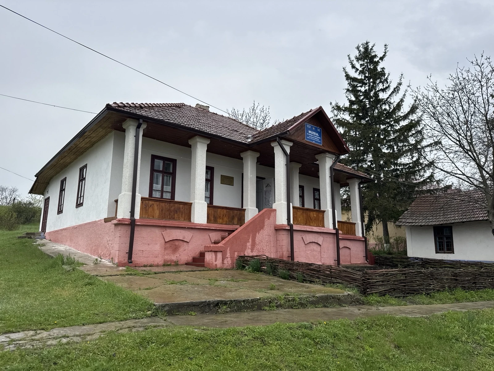
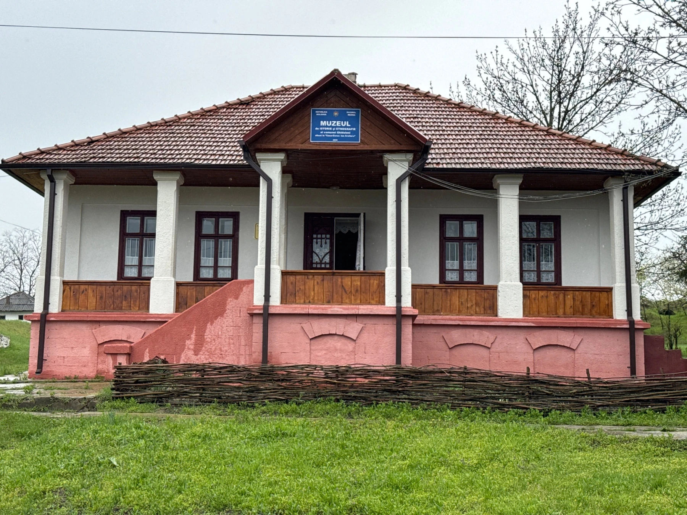
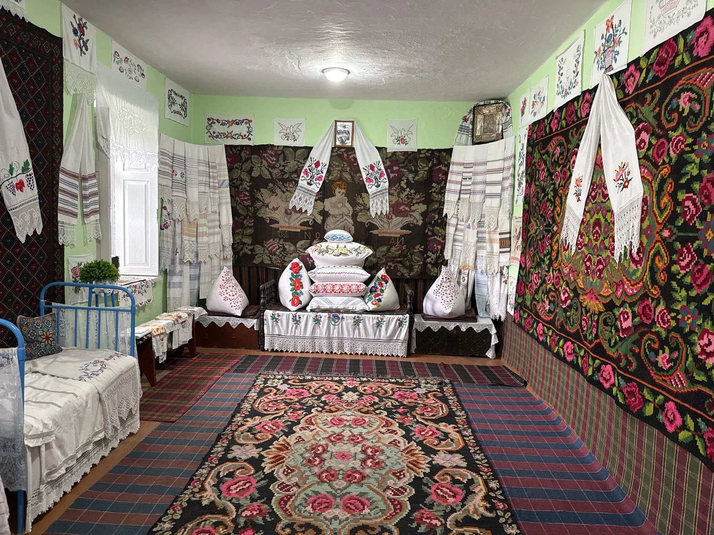
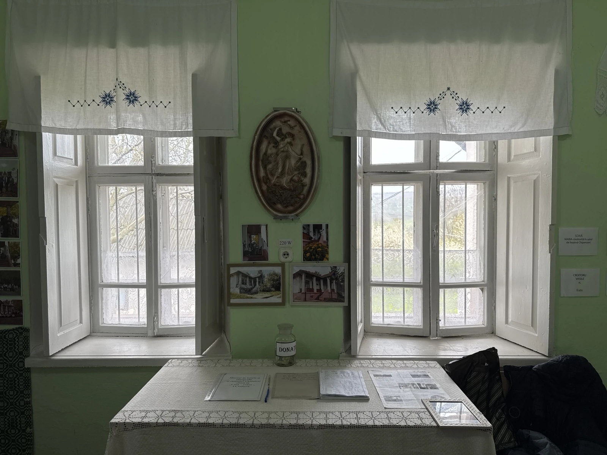
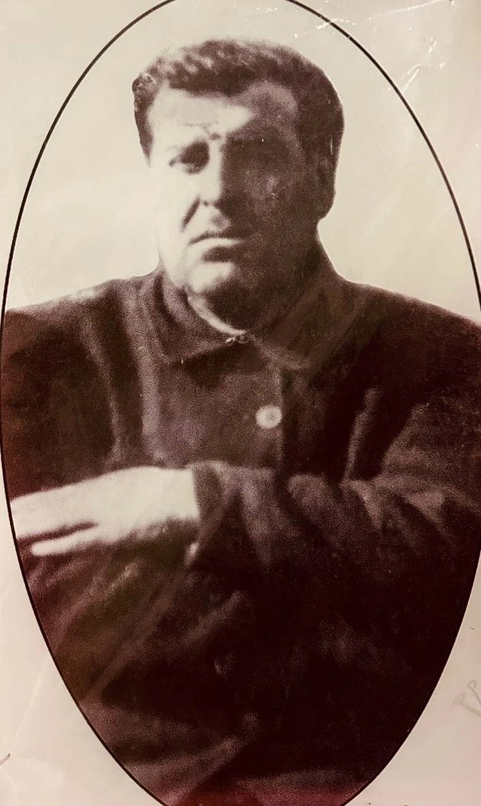
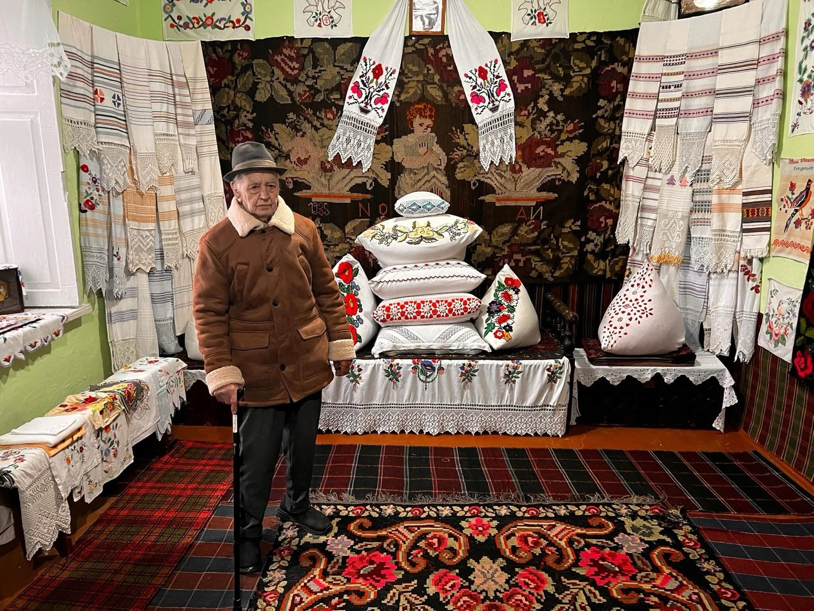
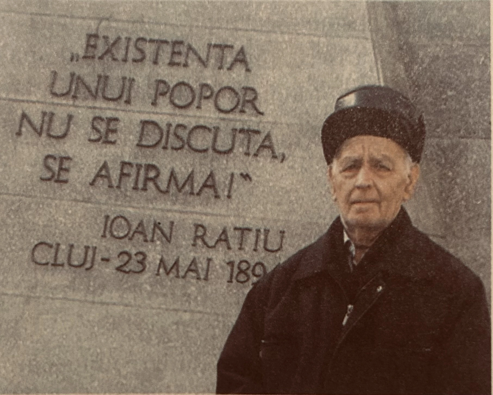

În satul Ghiduleni, pe valea Cogâlnicului, vechiul conac al familiei Croitoru a stat multă vreme tăcut. Profesorul Ion Tudose a văzut în el un loc unde trecutul satului poate fi adăpostit — și a început să adune, lucrurile care spuneau cine suntem.

Casa-conac „Ion Croitoru” rămâne una dintre cele mai frumoase clădiri vechi ale satului — cu fronton, cerdac și șase coloane.

Camera de sărbătoare, plină de covoare cu flori, perne brodate și ștergare lucrate de mână.

Astăzi colecția e deschisă satului, diasporei și oricui vrea să-și cunoască rădăcinile.

Dascăl și boier al Ghidulenilor din perioada interbelică, Ion Croitoru a trăit în conacul care astăzi adăpostește muzeul. Perioada 1918–1940 — administrația românească a Basarabiei — a fost una dintre cele mai fertile pentru viața culturală și educațională a satelor moldovenești.
Alegerea acestui loc pentru muzeu nu este întâmplătoare: conacul lui Ion Croitoru este o legătură vie cu istoria intelectuală a localității, cu valorile care au format generații de ghiduleni.
Muzeul păstrează memoria acestui om și a epocii sale ca parte integrantă a identității satului.
Profesor de istorie, director de școală, poet și Tezaur Uman Viu al comunității din Ghiduleni — Ion Tudose este sufletul și inițiatorul Muzeului din Ghiduleni.
Un mare pasionat de istorie, domnia sa a reușit să formeze generații întregi de elevi cu dragoste față de neam și valorile naționale. A îmbogățit cultura locală prin publicarea a două cărți — mărturie a pasiunii pentru valorile istorice și spirituale ale meleagurilor natale.
La pensionarea sa, comunitatea i-a adus un omagiu de recunoștință: „Fiecare elev pe care l-ați format, fiecare tradiție pe care ați transmis-o mai departe este o piatră de temelie a prezentului și a viitorului comunității.”
Alături de soția sa, Lidia Tudose, continuă să fie vocea vie a trecutului pentru generațiile de astăzi.


Siliștea Ghiduleni este atestată documentar la 30 iunie 1665, când câțiva răzeși din Ghiduleni figurau ca martori în determinarea hotarelor moșiei Sămășcani. La finele anului 1696, siliștea este menționată într-o carte domnească de la Antioh Cantemir.